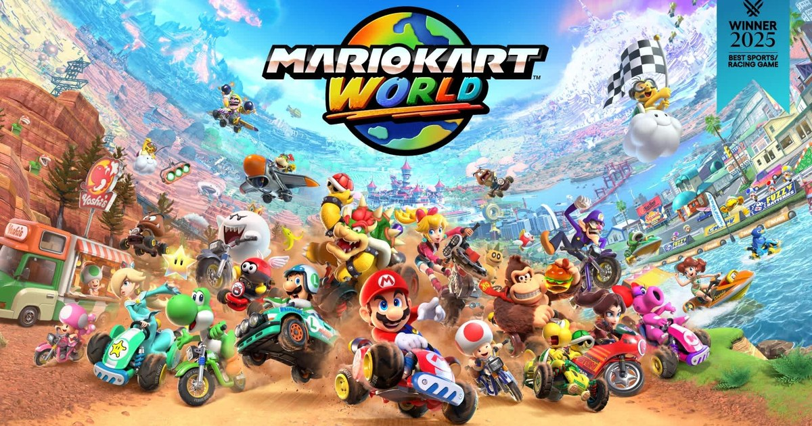

Mario Kart World 1.9.0 is live — eight remixed courses, two new Knockout Tour routes, and replays
Nintendo released Mario Kart World version 1.9.0 on November 24, adding eight remixed courses, two new Knockout Tour routes — Feather Rally and Lucky Cat Rally — and an automatic replay feature that saves your recent races.

Mario Kart World just got its biggest free update of the year. Nintendo released version 1.9.0 on November 24, and the headline is eight more courses to race — each a remix of a track already in the game, reworked with different routes, new twists, and in some cases run in reverse.
The eight new courses are Airship Fortress 2, Desert Hills 2, Salty Salty Speedway 2, DK Pass 2, Koopa Troopa Beach 2, Shy Guy Bazaar 2, Mario Bros. Circuit 2, and Wario Stadium 2. They're available now in VS Race, Time Trials, and races in Online Play and Wireless Play — no download beyond the update itself.
Two new Knockout Tour routes
Knockout Tour, the game's 24-player marathon elimination mode, gets two new routes. Feather Rally runs from Mario Bros. Circuit to Boo Cinema, and Lucky Cat Rally runs from Great ? Block Ruins to Sky-High Sundae. Both are live with the update.
Replays finally arrive
The other big addition is a replay feature, added to the top menu. The game now automatically saves replays of your most recent races and battles, so you can watch them back later without having saved anything yourself. If you pass the save capacity, the oldest replays are deleted first. One catch: if you quit or return to Free Roam through the pause menu mid-race, that race's replay won't be saved — and replays from version 1.8.0 and earlier aren't saved either.
The one thing fans are still waiting for
For all the new content, none of the eight courses is wholly original — they're remixes of existing tracks, and Nintendo has still not added a brand-new course to Mario Kart World since launch. That will keep the requests for a real DLC expansion coming. But as a free update, eight remixed courses, two Knockout Tour routes, and automatic replays is a serious drop — and it's live right now on Switch 2.
Sources: Mario Kart World update adds 8 courses and more (Nintendo) · Mario Kart World gets a new free update adding eight new tracks and other features (Video Games Chronicle) · New Mario Kart World Update Adds 8 More Tracks, Two New Knockout Tour Routes, And More (Game Informer) · Mario Kart World Has Been Updated To Version 1.9.0, Here Are The Full Patch Notes (Nintendo Life)
Gear up: Razer — mice, keyboards, headsets and laptops.